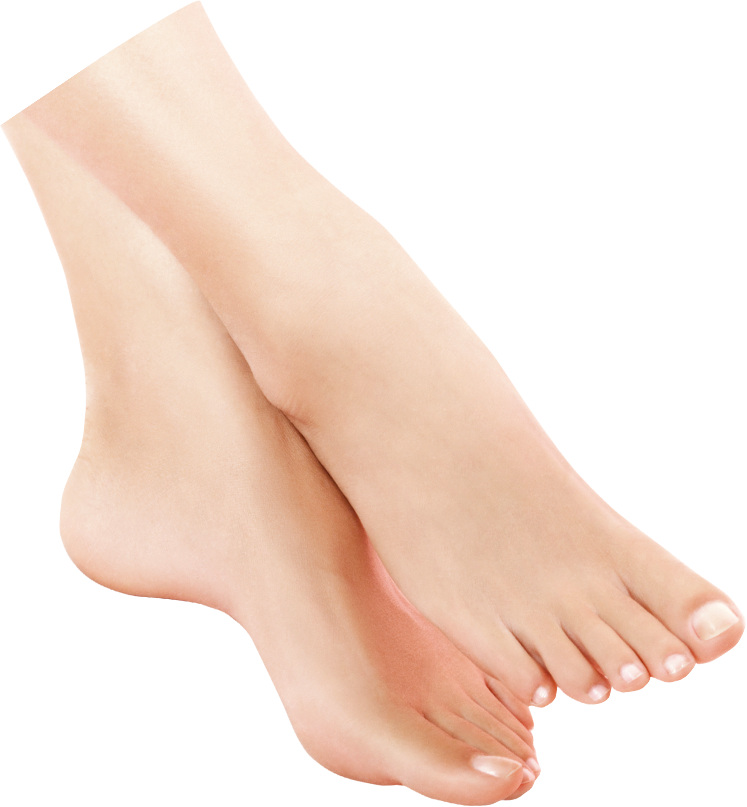
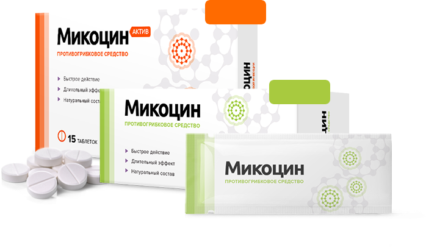

Микоцин

№1 Для избавления
от любого типа грибка
от любого типа грибка

Рекомендован
дерматологами
дерматологами

13000+ довольных
клиентов за 2018 год
клиентов за 2018 год



299 ₽
299 ₽
Комплексное
избавление
от грибка —
изнутри и снаружи
избавление
от грибка —
изнутри и снаружи
Комплекс Микоцин
устраняет
зуд, неприятный запах
и возвращает эстетичный вид
зуд, неприятный запах
и возвращает эстетичный вид
Таблетки Микоцин
уничтожают все виды грибка
на ногтях и коже
уничтожают все виды грибка
на ногтях и коже
Гель Микоцин
восстанавливает кожу
и создает на ней защитный
барьер
восстанавливает кожу
и создает на ней защитный
барьер

Бесплатно
Успейте заказать
со скидкой
до 10.09.2018
со скидкой
до 10.09.2018
старая цена
918 ₽
новая цена
459 ₽
Имя
Телефон
Заказать
со скидкой
со скидкой
Осталось 10 упаковок
со скидкой
со скидкой
Ваши данные защищены!